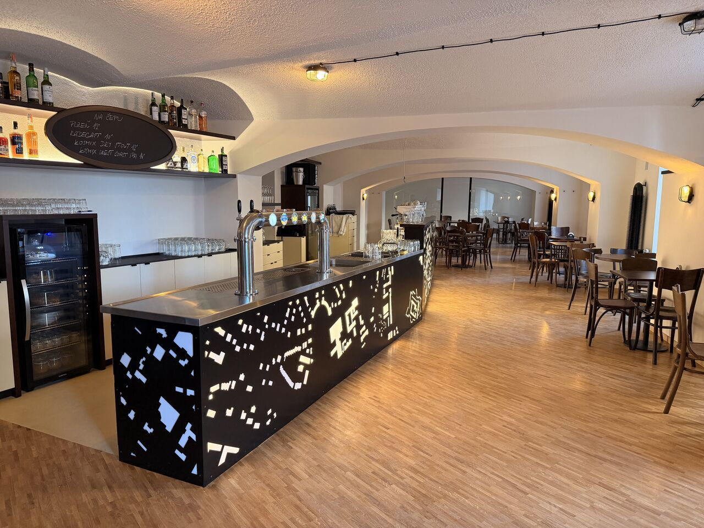

Pivní speciály i drinky
Na čepu máme Plzeň a Radka doplněné o speciály z pivovaru Kosmix. Nechybí ani Prosecco a výběr kvalitních rozlévaných i lahvových vín. V letních horkých dnech ocení hosté i míchané drinky.
Pivnice · Brno-město · pod Špilberkem
Skvěle načepované pivo, kvalitní vína a výborná kuchyně.

Vítejte
Vítejte v pivnici Pub Podzemi, která se nachází v krásném Brně-městě přímo v centru pod hradem Špilberk.
Nenechte se zmást názvem, nejde o žádný sklep. Naopak – vsadili jsme na vzdušnou pivnici s možností plného otevření výloh do nově zrekonstruované ulice. V letních měsících tak hosté ocení příjemné propojení interiéru s venkovním prostředím i plánovanou zahrádku přímo před podnikem.

Na čepu máme Plzeň a Radka doplněné o speciály z pivovaru Kosmix. Nechybí ani Prosecco a výběr kvalitních rozlévaných i lahvových vín. V letních horkých dnech ocení hosté i míchané drinky.
Luxusní pečený bůček šmrncnutý asijskými chutěmi, poctivý hovězí guláš, kachní rillettes či domácí focaccia. Nechybí ani klasické obložené chleby ideální k pivku.
Autorem interiéru je stejně jako v případě našeho Cafe Podnebi architekt Tomáš Pavlovský. Nový podnik navazuje na dlouholetou tradici a přináší svěží gastronomický zážitek.
Galerie


Otevírací doba
| Pondělí | 15:00 – 01:00 |
| Úterý | 15:00 – 01:00 |
| Středa | 15:00 – 01:00 |
| Čtvrtek | 15:00 – 01:00 |
| Pátek | 15:00 – 01:00 |
| Sobota | 15:00 – 01:00 |
| Neděle | 15:00 – 01:00 |
Kontakt
Pub Podzemi
Údolní 222/5
602 00 Brno-město